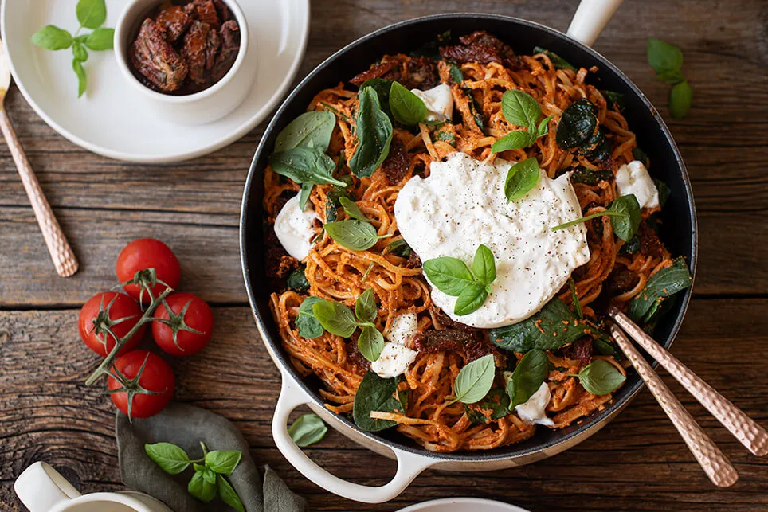

Mouthwatering Pasta with burrata and sun-dried tomatoes

Italy on our plate
We can only repeat it: We love Italy with its Mediterranean cuisine, loads of pizza, pasta, burrata and many other delicious ingredients. No visit to Italy is complete without good olive oil, spaghetti and basil. We particularly like to cook Italian food in the summer when we can't afford a holiday in the south. We serve: burrata on tagliatelle with dried tomatoes - buonissimo!
Ingredients
- 500g taliatelle
- 250ml whipped cream
- 2tsp sour cream
- 1 ladle of pasta water
- 1/2 can of Polpa di pomodoro
- 3 jars of dried tomatoes and olives
- 2 tablespoons oil from tomato jar
- 1 large onion
- 2 garlic cloves
- 100g fresh leaf spinac
- 100g fresh leaf spinac
Preparation steps
- Cook the tagliatelle in plenty of salted water until al dente.
- Puree the sour cream, whipped cream, a ladle of pasta water and the strained tomatoes with a hand blender until creamy.
- Remove the dried tomatoes from the jar, save the oil and chop the tomatoes.
- Peel the onion and garlic cloves and chop finely. Heat two tablespoons of oil from the tomato jar in a pan and fry the onion and garlic cubes. Fry two thirds of the chopped, dried tomatoes.
- Drain the pasta and add it to the pan with the tomatoes. Let the spinach wilt briefly in a separate pan, then add it to the pasta, then fold in the sour cream sauce and season everything with salt and pepper.
- Arrange the pasta in deep plates and serve with torn burrata and plenty of basil as well as the remaining dried tomatoes as a topping.